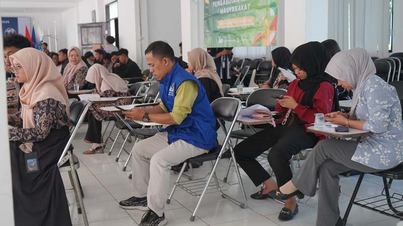
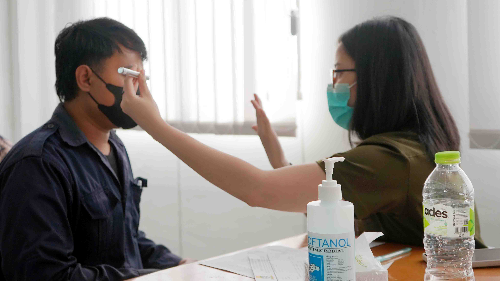
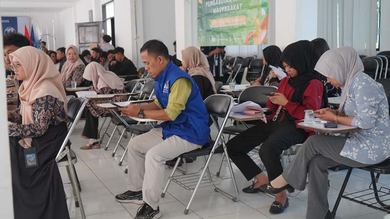
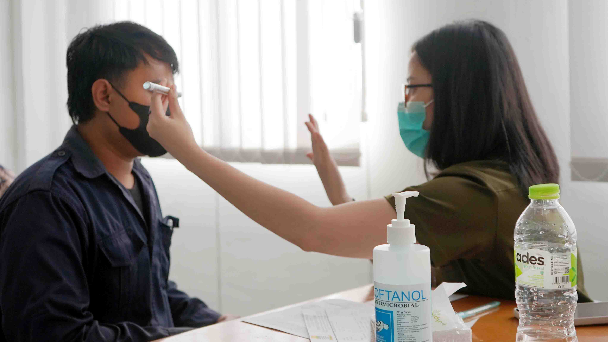

Kampus Sehat 2025 - Pemeriksaan Kesehatan
Pada hari Jumat, 13 Juni 2025, Digitech University menyelenggarakan kegiatan pemeriksaan kesehatan gratis bagi seluruh Dosen, mahasiswa dan karyawan. Kegiatan ini diprakarsai oleh Himpunan Mahasiswa Teknik Industri sebagai bentuk kepedulian terhadap kesehatan civitas akademika.
Pemeriksaan yang dilakukan meliputi pengecekan tekanan darah, kadar gula darah, gangguan mata dan konsultasi kesehatan ringan.
Acara ini disambut antusias oleh para mahasiswa yang ingin mengetahui kondisi kesehatan mereka secara dini, terlebih menjelang masa ujian akhir semester.
Melalui kegiatan ini, Digitech University ingin menanamkan pentingnya pola hidup sehat dan preventif sejak usia muda. Kampus berharap, kegiatan serupa bisa terus dilakukan secara rutin demi menciptakan lingkungan belajar yang sehat dan produktif.
Kembali ke Berita